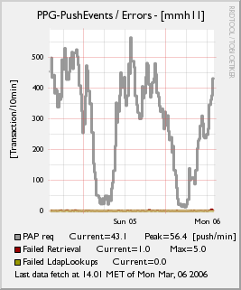
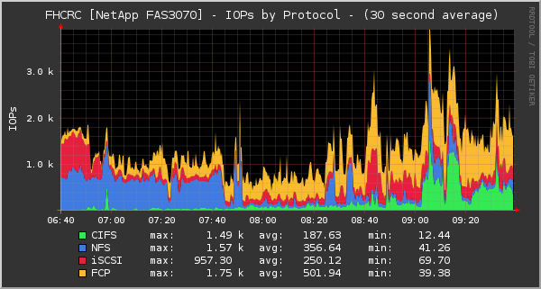
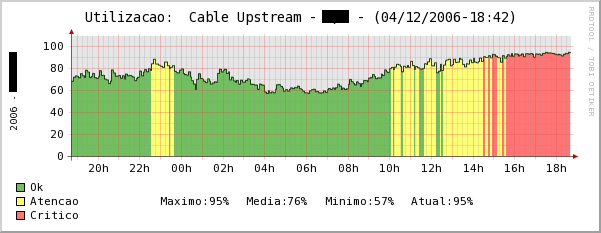
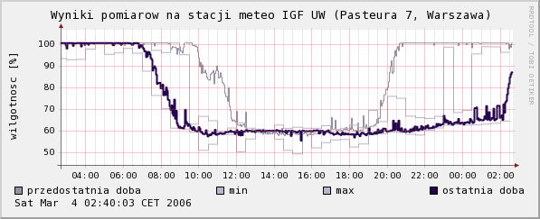
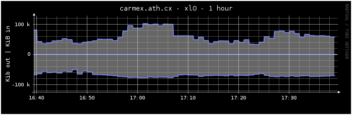

Menu
-
Gallery
Gold Sponsors

RRDtool
RRDtool Gallery
MMS Inbound
Simply parse of SNMPget from Vendor OID. The graph display the actual volume of transactions for MMS submitions, from 3 differents devices, such as, Phone, VAS and MM4 (others operator). -- Alex Rivoltella <alessio.r-delme-@XYZ-tiscalinet.it>, 2006/3
MMS Retrieve
Simply parse of SNMPget from Vendor OID. The graph display the actual volume of transactions for MMS retrieve for mobile phone and sent to other Operators (OLO). -- Alex Rivoltella <alessio.r-delme-@XYZ-tiscalinet.it>, 2006/3
MMS Errors

Simply parse of SNMPget from Vendor OID. The graph display the actual send a PAP push to the mobile, possibile errors due to get to HLR and retrieve for mobile. -- Alex Rivoltella <alessio.r-delme-@XYZ-tiscalinet.it>, 2006/3
Cubemon
Cubemon - Real-Time openGL rotating .png images from RRDTool. Images generated by stats from monitored devices rotate in cubes. This example showing 26 devices at once -- Hamish Marson <hamish@XYZ-travellingkiwi.com>, 2008/4
Sinus-Regression of Server-Traffic
This graph shows the traffic of a networkinterface(dark-green). In red is displayed the optimal sinus-curve thru the points of one week. Light-green is the "can-be-range" of the traffic that was not alarmed. Yellow is the "warning-range" of the curve and every other points cause an CRITICAL-Warning in our minitoring. So we bring the statistics-calculations into the monitoring. That will show us abnormaly using of different curves and alarm it. -- Holger Kohn <holger@XYZ-kohn-nf.de>, 2008/1 [demo]
Energy Mix

This graph shows indoor and outdoor temperature, heating temperatures, brightness, natural gas and electric power consumption. Values come from MessPC system and is created with sensorserver project -- Lutz Schulze <lschulze@XYZ-messpc.de>, 2008/3 [demo]
Network Appliance IOPs by protocol

We use a combination of RRDtool, SNMP and Python to gather metrics and generate graphs for several of our critical systems. This graph shows a three hour window of the disk IO activity on one of our NetApp filers broken down by protocol (CIFS, NFS, FCP and iSCSI). -- Robert McDermott <rmcdermo@XYZ-gmail.com>, 2007/12
PC temperatures and fan speeds
An aggregate of all the temperatures and fans in my personal desktop computer. The spike is me watching a HD movie trailer. The grey area is a reboot. -- Ciprian Popovici , 2007/10
Filesystem Utilization and Predicted Trends
Shows filesystem utilization with projected trend lines based on various starting points in the dataset. Trends are computed using the rrdtool Least Squares Line functions. If a trend is predicted to cross 100% utiliztion within the graph window, the date of the crossing is displayed. -- Damien S. Stuart <dstuart@XYZ-dstuart.org>, 2007/6
Streaming Auditor mesure

This graph waas made in order to have an idea of how many listerners are on the webradio every 5 minutes (in order to have a look on privileged listeing hours). It's an example of a "Blue Flaming". Thanks to ED and dedibox-news great helper team. If you want more explainations send me a mail. -- Black Dragon ? <black@XYZ-ozone-server.com>, 2007/5 [demo]
Thermostat with Indoor / Outdoor Temperature
A graph of the internal (green) and external (grey) temperature from an IP enabled thermostat. Red areas denote times when the heat was on while blue denotes times when the air-conditioning was on. This graph also simulates translucent intersecting areas where the internal and external temperatures can swap places without becoming unreadable. -- Anders Brownworth , 2007/5 [demo]
Voltage control on APC Smart-UPS 2200 (Last Month)

This graph shows the operating voltage of the electrical outlets in the last month. -- SnikS <admin@XYZ-vitmn.ru>, 2007/4
Temperature

This graph shows the temperature of a computer room (indoor) and make a parallel with external temperature (in Porto Alegre city). -- João Marcelo Ceron <>, 2007/6 [demo]
DOCSIS UPSTREAM UTILIZATION

This graph show de upstream utilization of DOCSIS CMTS in the cable modem broadband operator. -- Diego Santos Soares <diegosoares@XYZ-yahoo.com.br>, 2006/10
Statistic for network interfaces

This a real (not artificial) data from a production machine. Isn't it amazing? Probably not the ideal sampling interval. -- Andrey Afanasiev <afanasiev-av@XYZ-mcc.elektra.ru>, 2006/11 [demo]
Merry Christmas
Over a year ago I discoverd RRDtool. I had lots of fun creating all sorts of new graphs since then. So why not use RRDtool for my christmas cards too. A formula for the trees was simple. Father Christmas was more of a challenge though. -- Peter J. Linden <linden@XYZ-linden-itc.de>, 2005/12
Server room temperature monitoring
There are 8 thermal sensors across my server room. This graph shows thermal condition of various parts of the server room. -- Evgueni V. Gavrilov <aquatique@XYZ-rusunix.org>, 2006/10
Temperature, humidity and pressure plots

We use rrdtool to plot some basic meteorological parameters. Data is coming from our institute's (http://www.igf.fuw.edu.pl/zfa/en/) meteo-station which was build from scratch by students. Rrdtool fetch command is also used for creation of datafiles available on the website. -- Sylwester Arabas <slayoo@XYZ-igf.fuw.edu.pl>, 2005/12 [demo]
Load and CPU usage
Graphs the load averages on the system and the fractions of CPU states under the curve. -- Lars Kotthoff <metalhead@XYZ-metalhead.ws>, 2006/10 [demo]
Interconnect Utilization in Erlangs (Minutes per Minute)
Graph shows inbound and outbound call traffic going in and out of the switch via the 6 trunks connected to the Diamond exchange. Inbound traffic shown as positive and uses a lowest-free fill method. Outbound traffic shown as negative uses a distributed fill method. Tech details on RRDtrac. -- Ben Golden <bengolden@XYZ-.removethis.blueyonder.co.uk>, 2006/3
The Matrix
This is a part of our cluster of about 2000 CPUs. All nodes are being monitored in real-time for major system information every 15 seconds. Data collection and consolidation is done on one central server. -- Fabien Wernli , 2006/1
Windvaan de drie delfzijlen

A graph showing wind speed & direction. -- H.R. ter Veer <h.r.terveer@XYZ-noorderzijlvest.nl>, 2006/1
RRDstats QOS classes usage
RRDStats is Coyote Linux & BrazilFW floppy router package. Graphical statistics for bandwidth usage, link quality and defined QOS classes. -- Dolly <dolly@XYZ-czi.cz>, 2005/11 [demo]
Gamer count on 1stgame.nl
Stacked graph of gameserver player counts -- Tom Mulder <tom@XYZ-removethis.1stgame.nl>, 2005/11 [demo]
SMPP Router Statistics
SMSs per second statistics graph -- Osinet <info@XYZ-osinet.com.ar>, 2005/11 [demo]
Traffic in Kibibytes - cable modem.

Just an example of different colors and transparency more or less using the rrdtool's site colors. Has a one minute --step. -- Ryan Jordan <ryanstuartjordan@XYZ-gmail.com>, 2005/11 [demo]
Weather monitoring
This graph shows the atmospheric pressure measured at our school's weather station. We use this data and graphs to demonstrate weather behavior with real life data. -- Kantonsschule Zug <info@XYZ-kanti-zug.ch>, 2005/11 [demo]
WAN Link Monitoring
These graphs show network traffic inbound and outbound on the WAN link from our office into our corporate network, and allow us to monitor the network usage of each department in the office. pmacct is used to monitor all traffic on a mirrored switch port, with some perl scripts to parse the pmacct data, store it into rrd files and generate the graphs. Get in touch with me if you have any questions. -- Martin Pot , 2004/1
Solar System's Data
Shows the daily information about our solar system's data and state -- Christian Kaiser <chk@XYZ-online.de>, 2005/8 [demo]
![[demo]](http://www.invest-tools.com/pub/solar/today.png){kind=link}
Statistic for antispam server
Unlike most other report, data in this report are collected every hour (3600 sec). This graph shows how the effectiveness of using postfix UCE control, greylisting and spamassassin to reduce spam. -- Bambang Budiharto <budhi@XYZ-i6x.org>, 2005/6
ACAD Network - kuzniki.net - traffic graphing
This graph shows amount of total and peer2peer traffic generated by user. Online, offline decision is based on information if the computer was sending any data. (Legend translation: 'bajtow na sek DO' - eng. incoming Bps, 'bajtow na sek Z' - eng. outgoing Bps, 'razem' - eng. total, 'wylaczony' - eng. offline, 'wlaczony' - eng. online) -- Gabriel Borkowski , 2005/6
Mailgraph and Greylisting
This graphs show the effect that the greylisting technique had on our mail traffic. Notice the drop of spam and viruses in the middle of the graph (June 2004) and the corresponding increase in the rejected mails. -- David Schweikert <dws@XYZ-ee.ethz.ch>, 2005/6
Ram Usage on Linux Machine
Created for use with Torrus (unsubmitted) to show the usage of all available RAM, stacked by type of usage. -- Michiel Brandenburg <apex@XYZ-xepa.nl>, 2005/5
CPU Load drawed with drraw.cgi
Created with drraw from Christophe Kalt (See RRDtool Companions) Changing Colors and using the new Trend Funkion. -- Christoph Baumann <christoph.baumann@XYZ-coop.ch>, 2005/5
Fluxoscope Graph
Fluxoscope is a system used by SWITCH for measurements of our external network traffic. One of its products are graphs which represent, for each external connection, the protocol distribution of traffic over time. The example graph shows the traffic distribution on one of our "upstream" or transit ISPs over a period of a few hours. The "positive" part of the graph shows incoming traffic (what we receive from the ISP), the "negative" part corresponds to outgoing traffic (what we send them). -- Simon Leinen <simon@XYZ-switch.ch>, 2005/5
spamd connections
OpenBSD's spam deferral daemon connection graph shows simultaneous connections in green, and connection times in blue. The dark blue line shows the average connection time, with lighter blue used to show the range from minimum to maximum as a blurring effect. The data is taken from a spamd logfile every time a line is added, or at 10 second intervals if no new data arrives in which case the most recent values are duplicated. The RRD is created with a 30 second heartbeat - so some fractional number of connections is possible. For those unfamiliar with spamd, it is an SMTP tarpit for blacklisted senders. The logfile includes the number of concurrent connections each time a new host connects, and the time a connection has lasted when a host disconnects. The number of connections should be fairly accurate in the graphs, while the connection times are not so in the short-term, depending more on the timing of the disconnects. Connections and times are tracked separately in perl, except that disconnects cause a decrement in the connection count as well. -- Christopher Kruslicky <chris-rrdgallery@XYZ-kruslicky.net>, 2005/4
UW-HEP Grid Computing Resources Graph
This graph shows that the Linux Intel computing resources available for particle physics research at the University of Wisconsin provides 4.7 CPU years of computing power every day. It's a combination of Condor pools managed by High Energy Physics, the Computer Science Department and the Grid Laboratory of Wisconsin. -- Steve Rader <rader@XYZ-hep.wisc.edu>, 2005/5 [demo]
UW-HEP Grid CPU Utilization Graph
This graph shows the utilization of Linux Intel CPUs by particle physics researchers and other members of the Grid Laboratory of Wisconsin. -- Steve Rader <rader@XYZ-hep.wisc.edu>, 2005/5 [demo]
Add your own graphs to this list
If you have created a graph you like, and you think I would like it too, please send me the image plus an xml file like the example below to be considered for addition to this page. Note that your graph must not be wider than 600 pixels.
<gallery image="graph.png" > <!-- no wider than 600 pixle -->
<title> A Title for the Graph </title>
<author> Who created it ? </author>
<description> max 300 characters of background information. </description>
<year> 2005 </year><month> 4 </month> <!-- creation date -->
<!-- Optional -->
<livesite> http://somesite.blabla.plac </livesite>
<email> max@example.com </email>
</gallery>
04/28/08 | Tobias Oetiker | OETIKER+PARTNER AG